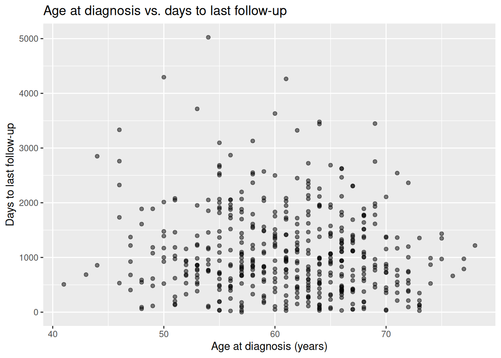
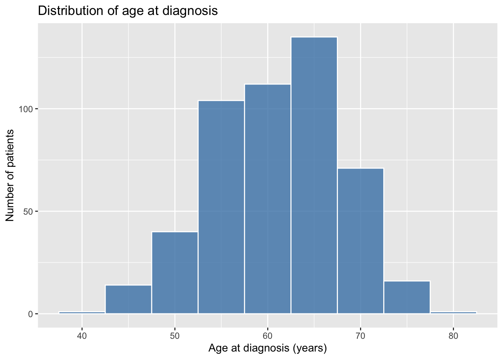
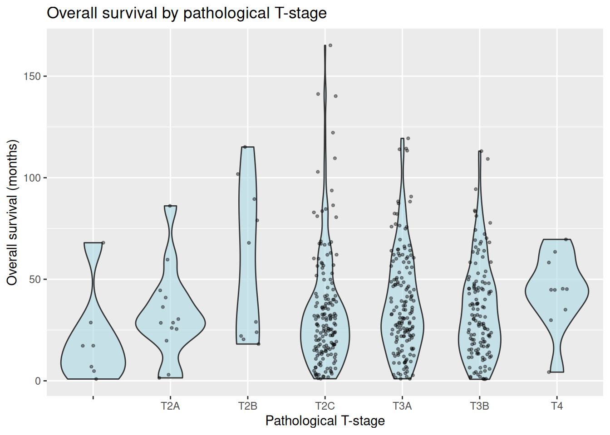

install.packages(c("here", "ggplot2"))Working with Data
1 Objective
In this lab we will work with a real clinical dataset from a prostate cancer cohort. By the end of the session you will be able to:
- import a tabular dataset into R
- explore its structure and contents
- create basic visualisations with
ggplot2 - save your plots to disk
We introduce ggplot2 here as a practical tool. In later labs we will use it extensively, so it is worth getting comfortable with its core syntax now.
2 Setup
2.1 Project structure
This lab assumes you are working inside the course RStudio project. The project uses the here package to construct file paths relative to the project root, so the code works regardless of where you have saved the project on your computer.
If you do not have here or ggplot2 installed, run the chunk below once:
2.2 The here package
here::here() always returns the path to the project root, no matter which subfolder your .qmd file is in. For example:
# Shows the project root on your machine
here::here()[1] "/home/runner/work/ai-clinical-research/ai-clinical-research"All file paths in this document are built with here(), so you never need to adjust them manually.
3 Dataset: TCGA Prostate Cancer
3.1 About the data
We use clinical data from the Prostate Adenocarcinoma cohort of The Cancer Genome Atlas (TCGA), as curated in the TCGA PanCancer Atlas 2018. This cohort includes 499 patients with matched genomic and clinical data.
cBioPortal is an open-access platform that provides interactive exploration of large-scale cancer genomics datasets. It is widely used in translational oncology research and is a key resource you will encounter throughout this master.
3.2 Download the data
- Go to the TCGA Prostate Cancer study page on cBioPortal.
- Click Download.
- Unzip the downloaded archive and move the folder
prad_tcga_pan_can_atlas_2018/into thedata/folder of the course project.
The file we need is data_clinical_patient.txt inside that folder.
Note
The dataset is already available in the data/ folder if you downloaded the full course materials from GitHub.
4 Import data
The clinical file uses tab-separated values with a 4-line header that describes the columns. We skip those lines and read the actual data starting at line 5.
5 Explore data
Before plotting or modelling, always explore your data. A few quick checks can save hours of debugging later.
# Preview the first 6 rows
head(clinical_data) PATIENT_ID SUBTYPE CANCER_TYPE_ACRONYM OTHER_PATIENT_ID
1 TCGA-2A-A8VL PRAD PRAD 49197847-CC83-4CE1-8397-D09CEA4C4928
2 TCGA-2A-A8VO PRAD PRAD 91C0D161-2B59-4B7A-8C19-6D26DEA31849
3 TCGA-2A-A8VT PRAD PRAD 931B549F-B9F2-4E8D-83ED-FF663671883C
4 TCGA-2A-A8VV PRAD PRAD 75A7AFB5-66D5-47E3-8A8A-3E3A1E749A96
5 TCGA-2A-A8VX PRAD PRAD 942F1788-D977-4AC0-A177-659F9D4CD077
6 TCGA-2A-A8W1 PRAD PRAD F5319FD5-BEAE-4CA8-8F42-45FCA5E6A2D2
AGE SEX AJCC_PATHOLOGIC_TUMOR_STAGE AJCC_STAGING_EDITION DAYS_LAST_FOLLOWUP
1 51 Male NA NA 621
2 57 Male NA NA 1701
3 47 Male NA NA 1373
4 52 Male NA NA 671
5 70 Male NA NA 1378
6 54 Male NA NA 112
DAYS_TO_BIRTH DAYS_TO_INITIAL_PATHOLOGIC_DIAGNOSIS ETHNICITY
1 -18658 0
2 -20958 0
3 -17365 0
4 -19065 0
5 -25904 0
6 -19964 0
FORM_COMPLETION_DATE HISTORY_NEOADJUVANT_TRTYN ICD_10 ICD_O_3_HISTOLOGY
1 3/29/14 No C61 8140/3
2 3/30/14 No C61 8140/3
3 3/29/14 No C61 8140/3
4 3/29/14 No C61 8140/3
5 3/29/14 No C61 8140/3
6 3/29/14 No C61 8140/3
ICD_O_3_SITE INFORMED_CONSENT_VERIFIED
1 C61.9 Yes
2 C61.9 Yes
3 C61.9 Yes
4 C61.9 Yes
5 C61.9 Yes
6 C61.9 Yes
NEW_TUMOR_EVENT_AFTER_INITIAL_TREATMENT PATH_M_STAGE PATH_N_STAGE
1 No NA N0
2 No NA
3 No NA N1
4 No NA N0
5 No NA N0
6 No NA N0
PATH_T_STAGE PERSON_NEOPLASM_CANCER_STATUS
1 T2B Tumor Free
2 T3A Tumor Free
3 T4 Tumor Free
4 T2B Tumor Free
5 T3B Tumor Free
6 T3A
PRIMARY_LYMPH_NODE_PRESENTATION_ASSESSMENT PRIOR_DX RACE RADIATION_THERAPY
1 NA No No
2 NA No No
3 NA No Yes
4 NA No No
5 NA No No
6 NA No
WEIGHT IN_PANCANPATHWAYS_FREEZE OS_STATUS OS_MONTHS
1 NA Yes 0:LIVING 20.416215
2 NA Yes 0:LIVING 55.922675
3 NA Yes 0:LIVING 45.139231
4 NA Yes 0:LIVING 22.060032
5 NA Yes 0:LIVING 45.303613
6 NA Yes 0:LIVING 3.682151
DSS_STATUS DSS_MONTHS DFS_STATUS DFS_MONTHS PFS_STATUS
1 0:ALIVE OR DEAD TUMOR FREE 20.416215 NA 0:CENSORED
2 0:ALIVE OR DEAD TUMOR FREE 55.922675 NA 0:CENSORED
3 0:ALIVE OR DEAD TUMOR FREE 45.139231 NA 0:CENSORED
4 0:ALIVE OR DEAD TUMOR FREE 22.060032 NA 0:CENSORED
5 0:ALIVE OR DEAD TUMOR FREE 45.303613 NA 0:CENSORED
6 0:ALIVE OR DEAD TUMOR FREE 3.682151 NA 0:CENSORED
PFS_MONTHS GENETIC_ANCESTRY_LABEL
1 20.416215
2 55.922675 EUR
3 45.139231 SAS_ADMIX
4 22.060032 ADMIX
5 45.303613 EUR
6 3.682151 EAS# Column names, types, and a sample of values
str(clinical_data)'data.frame': 494 obs. of 38 variables:
$ PATIENT_ID : chr "TCGA-2A-A8VL" "TCGA-2A-A8VO" "TCGA-2A-A8VT" "TCGA-2A-A8VV" ...
$ SUBTYPE : chr "PRAD" "PRAD" "PRAD" "PRAD" ...
$ CANCER_TYPE_ACRONYM : chr "PRAD" "PRAD" "PRAD" "PRAD" ...
$ OTHER_PATIENT_ID : chr "49197847-CC83-4CE1-8397-D09CEA4C4928" "91C0D161-2B59-4B7A-8C19-6D26DEA31849" "931B549F-B9F2-4E8D-83ED-FF663671883C" "75A7AFB5-66D5-47E3-8A8A-3E3A1E749A96" ...
$ AGE : int 51 57 47 52 70 54 69 57 57 56 ...
$ SEX : chr "Male" "Male" "Male" "Male" ...
$ AJCC_PATHOLOGIC_TUMOR_STAGE : logi NA NA NA NA NA NA ...
$ AJCC_STAGING_EDITION : logi NA NA NA NA NA NA ...
$ DAYS_LAST_FOLLOWUP : int 621 1701 1373 671 1378 112 863 1364 1272 615 ...
$ DAYS_TO_BIRTH : int -18658 -20958 -17365 -19065 -25904 -19964 -25557 -20866 -21183 -20582 ...
$ DAYS_TO_INITIAL_PATHOLOGIC_DIAGNOSIS : int 0 0 0 0 0 0 0 0 0 0 ...
$ ETHNICITY : chr "" "" "" "" ...
$ FORM_COMPLETION_DATE : chr "3/29/14" "3/30/14" "3/29/14" "3/29/14" ...
$ HISTORY_NEOADJUVANT_TRTYN : chr "No" "No" "No" "No" ...
$ ICD_10 : chr "C61" "C61" "C61" "C61" ...
$ ICD_O_3_HISTOLOGY : chr "8140/3" "8140/3" "8140/3" "8140/3" ...
$ ICD_O_3_SITE : chr "C61.9" "C61.9" "C61.9" "C61.9" ...
$ INFORMED_CONSENT_VERIFIED : chr "Yes" "Yes" "Yes" "Yes" ...
$ NEW_TUMOR_EVENT_AFTER_INITIAL_TREATMENT : chr "No" "No" "No" "No" ...
$ PATH_M_STAGE : logi NA NA NA NA NA NA ...
$ PATH_N_STAGE : chr "N0" "" "N1" "N0" ...
$ PATH_T_STAGE : chr "T2B" "T3A" "T4" "T2B" ...
$ PERSON_NEOPLASM_CANCER_STATUS : chr "Tumor Free" "Tumor Free" "Tumor Free" "Tumor Free" ...
$ PRIMARY_LYMPH_NODE_PRESENTATION_ASSESSMENT: logi NA NA NA NA NA NA ...
$ PRIOR_DX : chr "No" "No" "No" "No" ...
$ RACE : chr "" "" "" "" ...
$ RADIATION_THERAPY : chr "No" "No" "Yes" "No" ...
$ WEIGHT : logi NA NA NA NA NA NA ...
$ IN_PANCANPATHWAYS_FREEZE : chr "Yes" "Yes" "Yes" "Yes" ...
$ OS_STATUS : chr "0:LIVING" "0:LIVING" "0:LIVING" "0:LIVING" ...
$ OS_MONTHS : num 20.4 55.9 45.1 22.1 45.3 ...
$ DSS_STATUS : chr "0:ALIVE OR DEAD TUMOR FREE" "0:ALIVE OR DEAD TUMOR FREE" "0:ALIVE OR DEAD TUMOR FREE" "0:ALIVE OR DEAD TUMOR FREE" ...
$ DSS_MONTHS : num 20.4 55.9 45.1 22.1 45.3 ...
$ DFS_STATUS : chr "" "" "" "" ...
$ DFS_MONTHS : num NA NA NA NA NA ...
$ PFS_STATUS : chr "0:CENSORED" "0:CENSORED" "0:CENSORED" "0:CENSORED" ...
$ PFS_MONTHS : num 20.4 55.9 45.1 22.1 45.3 ...
$ GENETIC_ANCESTRY_LABEL : chr " " "EUR" "SAS_ADMIX" "ADMIX" ...# Statistical summary of each column
summary(clinical_data) PATIENT_ID SUBTYPE CANCER_TYPE_ACRONYM OTHER_PATIENT_ID
Length:494 Length:494 Length:494 Length:494
Class :character Class :character Class :character Class :character
Mode :character Mode :character Mode :character Mode :character
AGE SEX AJCC_PATHOLOGIC_TUMOR_STAGE
Min. :41.00 Length:494 Mode:logical
1st Qu.:56.00 Class :character NA's:494
Median :61.00 Mode :character
Mean :61.02
3rd Qu.:66.00
Max. :78.00
AJCC_STAGING_EDITION DAYS_LAST_FOLLOWUP DAYS_TO_BIRTH
Mode:logical Min. : 0.0 Min. :-28721
NA's:494 1st Qu.: 517.5 1st Qu.:-24294
Median : 924.0 Median :-22626
Mean :1080.1 Mean :-22487
3rd Qu.:1463.2 3rd Qu.:-20746
Max. :5024.0 Max. :-15330
NA's :8 NA's :11
DAYS_TO_INITIAL_PATHOLOGIC_DIAGNOSIS ETHNICITY FORM_COMPLETION_DATE
Min. :0 Length:494 Length:494
1st Qu.:0 Class :character Class :character
Median :0 Mode :character Mode :character
Mean :0
3rd Qu.:0
Max. :0
NA's :31
HISTORY_NEOADJUVANT_TRTYN ICD_10 ICD_O_3_HISTOLOGY
Length:494 Length:494 Length:494
Class :character Class :character Class :character
Mode :character Mode :character Mode :character
ICD_O_3_SITE INFORMED_CONSENT_VERIFIED
Length:494 Length:494
Class :character Class :character
Mode :character Mode :character
NEW_TUMOR_EVENT_AFTER_INITIAL_TREATMENT PATH_M_STAGE PATH_N_STAGE
Length:494 Mode:logical Length:494
Class :character NA's:494 Class :character
Mode :character Mode :character
PATH_T_STAGE PERSON_NEOPLASM_CANCER_STATUS
Length:494 Length:494
Class :character Class :character
Mode :character Mode :character
PRIMARY_LYMPH_NODE_PRESENTATION_ASSESSMENT PRIOR_DX
Mode:logical Length:494
NA's:494 Class :character
Mode :character
RACE RADIATION_THERAPY WEIGHT IN_PANCANPATHWAYS_FREEZE
Length:494 Length:494 Mode:logical Length:494
Class :character Class :character NA's:494 Class :character
Mode :character Mode :character Mode :character
OS_STATUS OS_MONTHS DSS_STATUS DSS_MONTHS
Length:494 Min. : 0.7562 Length:494 Min. : 0.7562
Class :character 1st Qu.: 17.2272 Class :character 1st Qu.: 17.2272
Mode :character Median : 30.3777 Mode :character Median : 30.3777
Mean : 35.7313 Mean : 35.7313
3rd Qu.: 48.1063 3rd Qu.: 48.1063
Max. :165.1708 Max. :165.1708
DFS_STATUS DFS_MONTHS PFS_STATUS PFS_MONTHS
Length:494 Min. : 1.874 Length:494 Min. : 0.7562
Class :character 1st Qu.: 19.413 Class :character 1st Qu.: 13.8327
Mode :character Median : 30.328 Mode :character Median : 25.6929
Mean : 35.657 Mean : 31.6613
3rd Qu.: 45.665 3rd Qu.: 44.7940
Max. :165.171 Max. :165.1708
NA's :160
GENETIC_ANCESTRY_LABEL
Length:494
Class :character
Mode :character
TipWhat to look for
When exploring a new dataset, pay attention to:
-
Missing values (
NA):summary()reports their count per column. - Unexpected types: a numeric column stored as character is a common import issue.
- Implausible values: e.g. a patient age of 0 or 999 usually signals a coding convention for missing data.
6 Visualise data with ggplot2
ggplot2 implements the Grammar of Graphics: every plot is built by combining a dataset, an aesthetic mapping (which variables map to x, y, colour, etc.), and one or more geometric layers (points, lines, bars, etc.).
The basic template is always:
ggplot(data, aes(x = ..., y = ...)) +
geom_*() +
labs(...)6.1 Scatter plot: age vs. follow-up duration
ggplot(clinical_data, aes(x = AGE, y = DAYS_LAST_FOLLOWUP)) +
geom_point(alpha = 0.5) +
labs(
title = "Age at diagnosis vs. days to last follow-up",
x = "Age at diagnosis (years)",
y = "Days to last follow-up"
)
This plot shows the relationship between age at diagnosis and the length of follow-up. Each point is one patient. The alpha argument controls point transparency, which helps reveal overplotted regions.
7 Save a plot
Use ggsave() to export the last plot to a file. Specifying width, height, and dpi ensures consistent, publication-quality output.
Note
The output/ folder must exist before running this chunk. Create it in the Files pane of RStudio, or run dir.create(here("output")) once.
8 Exercises
Work through the exercises below. Try to write the code yourself before looking at the solution.
8.1 Exercise 1: Distribution of age at diagnosis
Create a histogram showing the distribution of patient age at diagnosis.
Hint: look at the ggplot2 documentation for geom_histogram(). Try adjusting the binwidth argument to see how it affects the plot.
# Your code here
TipSolution
ggplot(clinical_data, aes(x = AGE)) +
geom_histogram(binwidth = 5, fill = "steelblue", color = "white", alpha = 0.8) +
labs(
title = "Distribution of age at diagnosis",
x = "Age at diagnosis (years)",
y = "Number of patients"
)
8.2 Exercise 2: Overall survival by pathological stage
Create a violin plot showing the distribution of overall survival time (in months) for each pathological T-stage.
Hints:
- Look at
geom_violin()in theggplot2documentation. - Add a
geom_jitter()layer on top to show individual data points. - The relevant columns are
PATH_T_STAGEandOS_MONTHS.
# Your code here
TipSolution
ggplot(clinical_data, aes(x = PATH_T_STAGE, y = OS_MONTHS)) +
geom_violin(fill = "lightblue", alpha = 0.6) +
geom_jitter(width = 0.15, alpha = 0.4, size = 0.8) +
labs(
title = "Overall survival by pathological T-stage",
x = "Pathological T-stage",
y = "Overall survival (months)"
)
Notice how the violin plot reveals the shape of the distribution within each stage, while the jittered points show the actual density of observations.
8.3 Exercise 3 (optional): Kaplan–Meier survival curves
NoteGoing deeper: survival analysis
If you are familiar with survival analysis, try plotting Kaplan–Meier curves stratified by pathological stage using the survminer and survival packages.
# install.packages(c("survival", "survminer"))
library(survival)
library(survminer)
# Create a survival object
# OS_STATUS coding: check the data dictionary — typically 0 = alive, 1 = dead
surv_obj <- Surv(time = clinical_data$OS_MONTHS,
event = clinical_data$OS_STATUS == "DECEASED")
# Fit KM curves by pathological stage
km_fit <- survfit(surv_obj ~ PATH_T_STAGE, data = clinical_data)
# Plot
ggsurvplot(
km_fit,
data = clinical_data,
risk.table = TRUE,
pval = TRUE,
title = "Kaplan–Meier survival by pathological T-stage"
)We will cover survival analysis in more detail in later sessions.
9 Session Info
R version 4.5.2 (2025-10-31)
Platform: x86_64-pc-linux-gnu
Running under: Ubuntu 24.04.4 LTS
Matrix products: default
BLAS: /usr/lib/x86_64-linux-gnu/openblas-pthread/libblas.so.3
LAPACK: /usr/lib/x86_64-linux-gnu/openblas-pthread/libopenblasp-r0.3.26.so; LAPACK version 3.12.0
locale:
[1] LC_CTYPE=C.UTF-8 LC_NUMERIC=C LC_TIME=C.UTF-8
[4] LC_COLLATE=C.UTF-8 LC_MONETARY=C.UTF-8 LC_MESSAGES=C.UTF-8
[7] LC_PAPER=C.UTF-8 LC_NAME=C LC_ADDRESS=C
[10] LC_TELEPHONE=C LC_MEASUREMENT=C.UTF-8 LC_IDENTIFICATION=C
time zone: UTC
tzcode source: system (glibc)
attached base packages:
[1] stats graphics grDevices utils datasets methods base
other attached packages:
[1] ggplot2_4.0.2 here_1.0.2
loaded via a namespace (and not attached):
[1] vctrs_0.7.3 cli_3.6.6 knitr_1.51 rlang_1.2.0
[5] xfun_0.57 otel_0.2.0 generics_0.1.4 S7_0.2.1
[9] jsonlite_2.0.0 labeling_0.4.3 glue_1.8.0 rprojroot_2.1.1
[13] htmltools_0.5.9 scales_1.4.0 rmarkdown_2.31 grid_4.5.2
[17] tibble_3.3.1 evaluate_1.0.5 fastmap_1.2.0 yaml_2.3.12
[21] lifecycle_1.0.5 compiler_4.5.2 dplyr_1.2.1 RColorBrewer_1.1-3
[25] pkgconfig_2.0.3 htmlwidgets_1.6.4 farver_2.1.2 digest_0.6.39
[29] R6_2.6.1 tidyselect_1.2.1 pillar_1.11.1 magrittr_2.0.5
[33] withr_3.0.2 tools_4.5.2 gtable_0.3.6